Bachelor’s Degree · Current
มหาวิทยาลัยศรีปทุม
สาขาวิศวกรรมคอมพิวเตอร์
นักศึกษาวิศวกรรมคอมพิวเตอร์ · พร้อมฝึกงาน
พัฒนาเว็บและผลิตภัณฑ์ดิจิทัลตั้งแต่การออกแบบหน้าจอ ไปจนถึงระบบหลังบ้านและ AI โดยให้ความสำคัญกับความเข้าใจง่ายและการใช้งานจริง
01 / เกี่ยวกับฉัน
คิดแบบนักพัฒนา · ออกแบบโดยเข้าใจผู้ใช้
สวัสดีค่ะ ชื่อพริ้ม—นิชนันท์ นามวงศ์ เป็นนักศึกษาวิศวกรรมคอมพิวเตอร์ที่สนใจทั้งการออกแบบและพัฒนาผลิตภัณฑ์ดิจิทัล
พริ้มชอบนำ UX/UI, Frontend, Backend และ AI มาทำงานร่วมกัน สนุกกับการเรียนรู้เทคโนโลยีใหม่และแก้ปัญหาอย่างเป็นขั้นตอน เป้าหมายคือสร้างงานที่ใช้งานได้จริงและเข้าใจง่าย ตอนนี้กำลังมองหาโอกาสฝึกงาน เพื่อเรียนรู้จากทีมมืออาชีพและพัฒนาทักษะผ่านโปรเจกต์จริง
เรียนรู้ทั้งงานเขียนโค้ด AI
และการออกแบบที่เข้าใจผู้ใช้
02 / การศึกษา
Bachelor’s Degree · Current
สาขาวิศวกรรมคอมพิวเตอร์
Secondary Education
แผนการเรียนวิทยาศาสตร์–คณิตศาสตร์
03 / ทักษะ
รวมทักษะด้านการออกแบบหน้าจอ การพัฒนาเว็บ ระบบหลังบ้าน AI ฐานข้อมูล และการนำระบบขึ้นใช้งาน โดยแสดงระดับความถนัดตามประสบการณ์ปัจจุบัน
04 / Certificates
ใบรับรองด้าน IoT, UX/UI และ Frontend ที่สะท้อนการเรียนรู้ทั้งการออกแบบประสบการณ์ผู้ใช้และการพัฒนาระบบ
3 certificates · click to view full size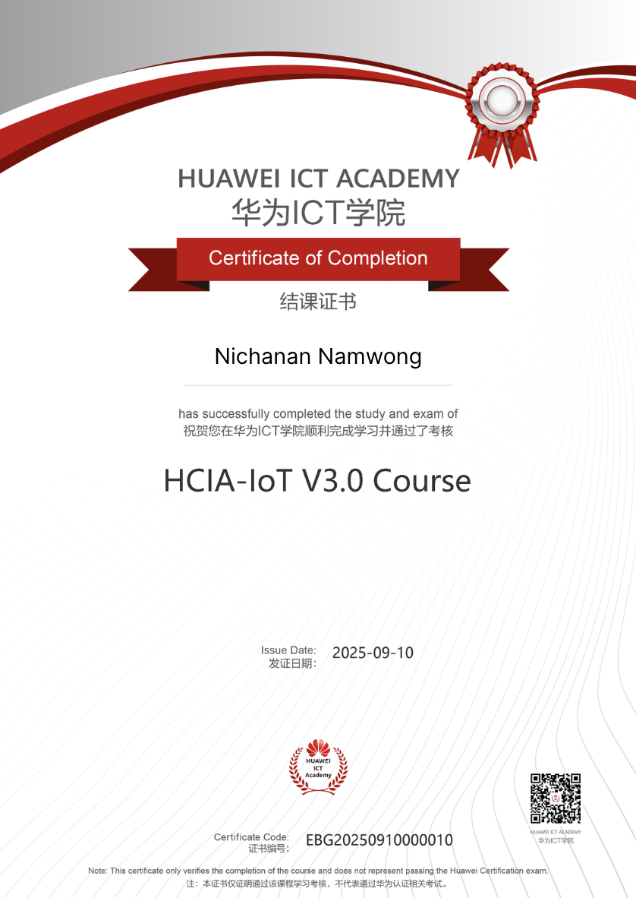
Certificate / 01
Certificate of Completion · 10 Sep 2025
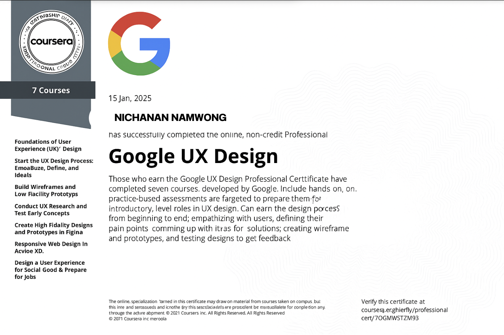
Professional Certificate / 02
7-course program · 15 Jan 2025
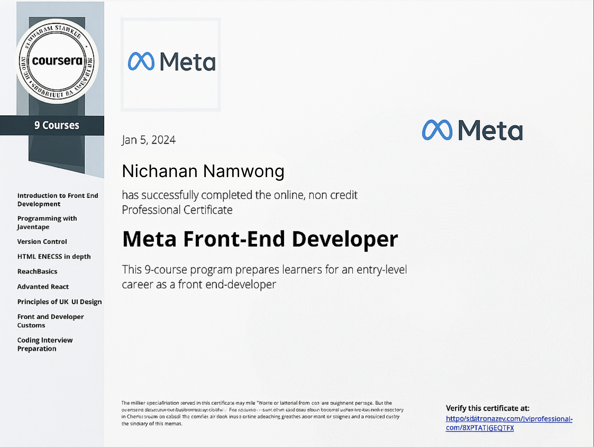
Professional Certificate / 03
9-course program · 5 Jan 2024
05 / University Projects
แฟ้มรวบรวมผลงานจากมหาวิทยาลัย กดที่แต่ละโปรเจกต์เพื่อดูโจทย์ กระบวนการ เทคโนโลยี และภาพการทำงานจริง
Project Overview
ระบบอัตโนมัติที่เปลี่ยน LINE ให้เป็นผู้ช่วยการเงิน ผู้ใช้พิมพ์รายการหรือส่งสลิป จากนั้น AI จะอ่าน จัดหมวด และบันทึกลง Google Sheets พร้อมเรียกดูสรุปรายเดือนหรือรายปีได้ทันที
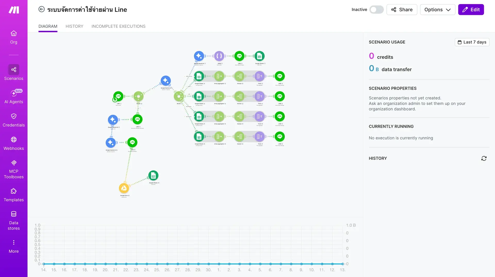
Problem
การบันทึกด้วยตนเองใช้หลายขั้นตอนและทำให้ข้อมูลกระจัดกระจาย จึงออกแบบให้ LINE เป็นจุดเริ่มต้นเดียวสำหรับทั้งข้อความและรูปภาพ
Process & Solution
รองรับข้อความภาษาพูดและภาพสลิปในช่องทางที่ผู้ใช้คุ้นเคย
Webhook แยกเส้นทางตามชนิดข้อมูลและควบคุมลำดับการทำงาน
อ่านข้อความ ดึงยอด ร้านค้า วันที่ และจัดหมวดค่าใช้จ่ายเป็นข้อมูลมาตรฐาน
บันทึกข้อมูลลง Google Sheets เก็บไฟล์ใน Google Drive และส่งผลยืนยันกลับ LINE
Architecture & Technology
My Contribution
ออกแบบโครงสร้าง automation และเส้นทาง Webhook, เชื่อม LINE Messaging API กับ Make, กำหนดรูปแบบข้อมูลที่ Gemini ต้องส่งกลับ และจัดระเบียบข้อมูลสำหรับบันทึกลง Google Sheets รวมถึงออกแบบข้อความยืนยันและกรณีแจ้งเตือนเมื่อข้อมูลจากสลิปไม่ชัดเจน
Key Capabilities
Challenges
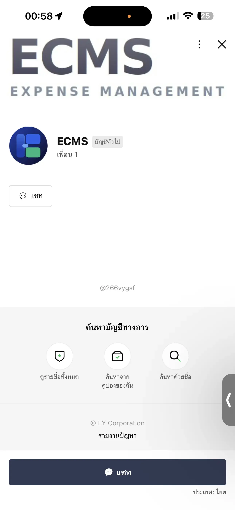
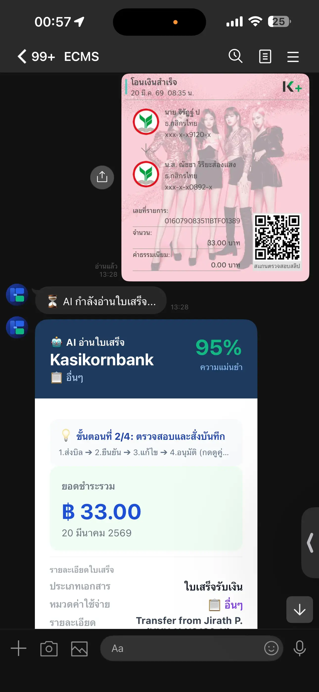
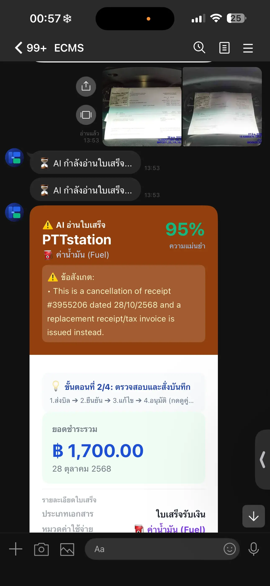
Outcome
ได้ระบบรายจ่ายแบบสนทนาที่รับทั้งข้อความและสลิป แปลงข้อมูลให้อยู่ในรูปแบบเดียวกัน และจัดเก็บเป็นโครงสร้างสำหรับค้นหาและสรุปผลภายหลัง
Project Overview
แนวคิดแอปผู้ช่วยออกกำลังกายส่วนบุคคลสำหรับผู้ที่ขาดเวลา คำแนะนำ หรือแรงจูงใจ โดยออกแบบประสบการณ์ให้เริ่มต้นง่าย ปรับตามข้อมูลสุขภาพและเป้าหมาย และช่วยให้ผู้ใช้ติดตามความก้าวหน้าได้จากทุกที่
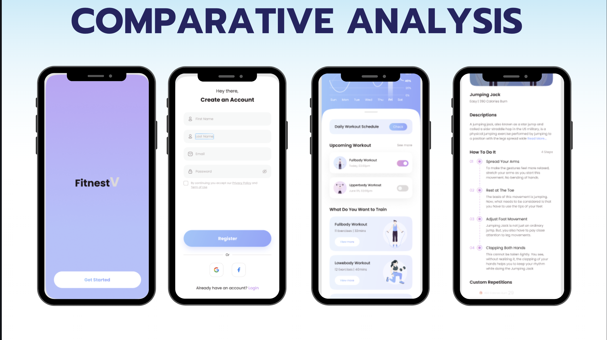
Problem
ผู้ใช้จำนวนมากไม่มีเวลาไปยิม ไม่แน่ใจว่าทำท่าถูกหรือไม่ และเลิกกลางทางเมื่อไม่เห็นผล จึงต้องการเส้นทางที่ชัดเจนและปรับให้เข้ากับชีวิตจริง
Target Personas
ต้องการโปรแกรมสั้น 10–20 นาทีที่ทำได้ที่บ้าน
ไม่รู้ว่าจะเริ่มจากไหนและกังวลเรื่องท่าทาง
ต้องการลดน้ำหนักและติดตามกิจกรรมอย่างต่อเนื่อง
ต้องการคำแนะนำที่คำนึงถึงอายุและข้อมูลสุขภาพ
Empathy Map
“อยากออกกำลังกาย แต่ไม่รู้จะเริ่มยังไง”
โปรแกรมแบบไหนเหมาะกับอายุ สุขภาพ และเวลาของฉัน?
ค้นหาคลิปออกกำลังกายและใช้อุปกรณ์ wearable ติดตามสุขภาพ
ตื่นเต้นตอนเริ่ม แต่กังวลเรื่องความต่อเนื่องและการบาดเจ็บ
เทรนเนอร์มีค่าใช้จ่ายสูง และคนที่ไม่มีแผนอาจทำผิดท่าจนเจ็บ
คำแนะนำว่าการทำท่าให้ถูกและไม่หนักเกินไปสำคัญต่อผลลัพธ์
Design Focus
My Contribution
ศึกษาปัญหาและความต้องการของกลุ่มเป้าหมาย สรุป Persona และ Empathy Map วาง user flow ตั้งแต่ onboarding ถึง dashboard แล้วออกแบบ wireframe, visual interface และ interactive prototype ใน Figma
Design Advantages
Risks & Limitations
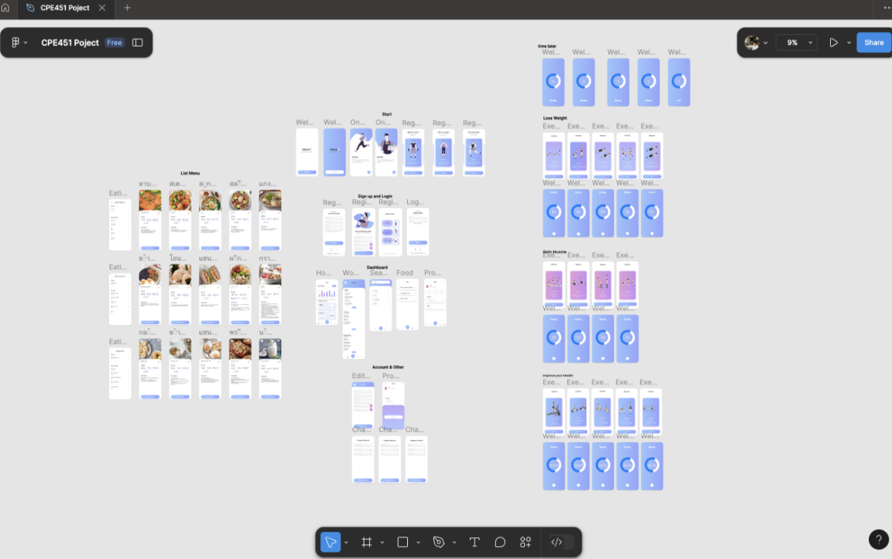
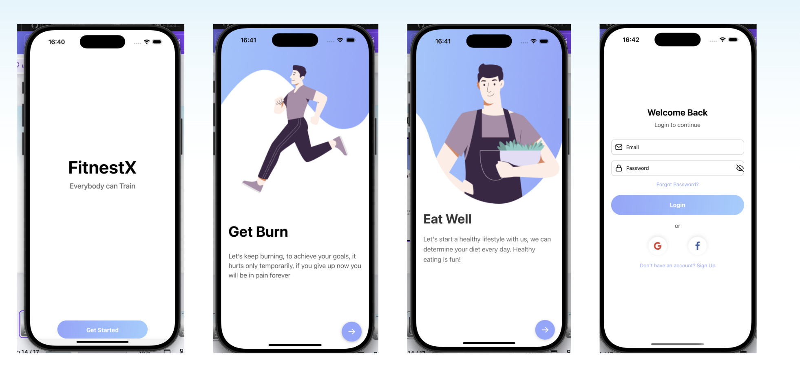
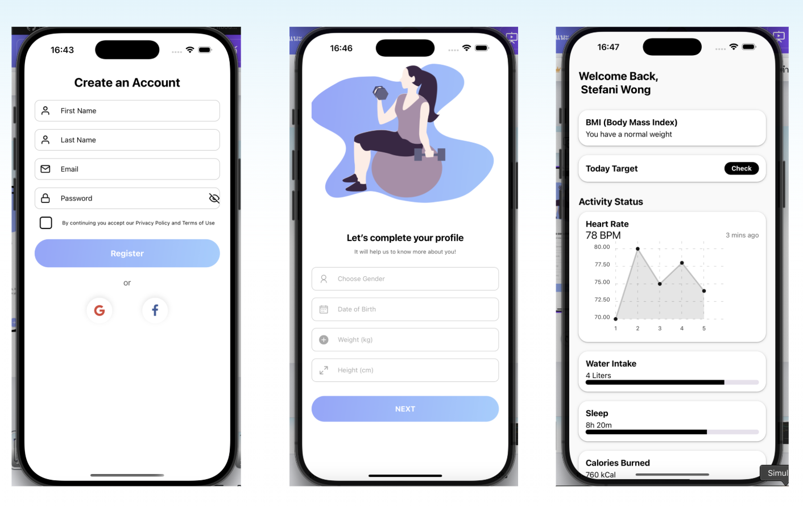
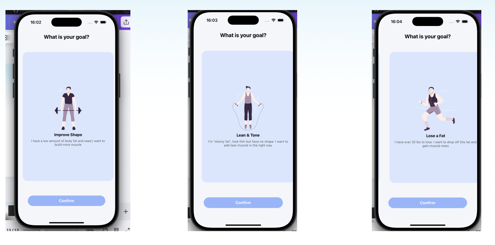
Outcome
ได้แนวคิดและ interactive prototype ที่เชื่อมการตั้งค่าข้อมูลสุขภาพ การเลือกเป้าหมาย ตารางฝึก และ dashboard ติดตามผลไว้ในประสบการณ์เดียว พร้อมกรอบความเสี่ยงที่ต้องตรวจสอบก่อนพัฒนา AI จริง
06 / Contact
พร้อมเรียนรู้ ลงมือทำ และเติบโตไปกับทีม กำลังมองหาโอกาสฝึกงานด้าน Full Stack, AI, Frontend หรือ UX/UI
Open for internship · Bangkok